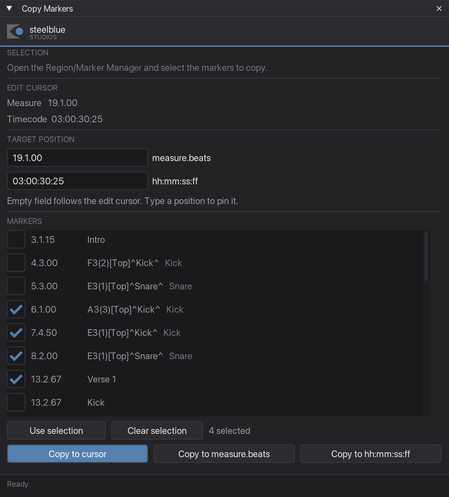

Copy Markers
Copies a set of markers to another position on the timeline — keeping their spacing, their names and their colours.
What it is for
You have programmed a block of cues — say a chorus — and the same block comes back later in the song. Instead of rebuilding it, select those markers once and drop a copy wherever you need it. The distances between them stay exactly as they were.
Step by step
-
Select the markers in the Region/Marker Manager
Open it with View → Region/Marker Manager, then click the markers you want. Shift-click for a range, Cmd-click to pick individual ones. Regions in the selection are ignored — only markers are copied.

Three markers selected: verse, buildup, drop. The marker break below stays untouched. -
Click once into the arrange
This step is easy to miss if you start the plugin from a shortcut. As long as the Region/Marker Manager has keyboard focus, it swallows the shortcut: the window will not appear, and your marker selection gets cleared. Click anywhere in the arrange view first, then press the shortcut.
Your selection survives that click. The highlight may go pale once the manager is no longer the active window — that is the system dimming it, not the selection being lost. The plugin still reads it correctly.
The workspace tab is already open, so none of this applies there.
-
Check the list
Open the Copy Markers tab, or run the plugin in its own window. Beside the controls is a list of every marker in the project, each with a tick box, its position, its name and its ruler lane. What is ticked is what gets copied.
The ticks follow the Region/Marker Manager: select there, and the list follows along. The moment you tick a box yourself, it stops following and the ticks are yours.

The list is the selection. The count under it says how many are ticked. Use selection Ticks exactly what the manager has selected, and goes back to following it. Clear selection Unticks everything and leaves the ticks to you. N selected How many are ticked right now — that is what the next copy will produce. You can leave the window open while you work: change the selection in the manager or move the edit cursor, and the display follows.
-
Choose where the copy should go
There are three ways, and you can use whichever fits the moment:
Copy to cursor Copies to wherever the edit cursor is right now — the fastest way. Move the cursor, hit the button. Copy to measure.beats For a musical position: type something like 19.3.00.Copy to hh:mm:ss:ff For a timecode position: type something like 00:00:34:20.Leave a target field empty and it follows the edit cursor, showing where a copy would land as you move it. Type a position into it and it stays pinned there until you clear it again.
-
Copy
The status line confirms what happened. The copies carry the original names, colours and ruler lanes.

The copies M6–M8 arrived at bar 14, 16 and 18 — two bars apart, exactly like the originals at 1, 3 and 5.
Good to know
Spacing is measured from the earliest marker
The first of your selected markers — the earliest one on the timeline, not the first one you clicked — lands exactly on the target position. Everything else keeps its distance to it. So the block arrives as a block.
The selection is read from the manager, not from the arrange
Markers you clicked in the arrange view are not the same selection as the manager's list. If the manager is closed, the plugin falls back to the arrange selection and says so in the window. Either way it only ever sets the ticks — the ticks are what gets copied.
Copies keep their ruler lane
A marker in the Kick lane arrives in the Kick lane, so a copied block of cues stays on the same row of the ruler and in the same sequence. The lane each marker is in is shown in its row in the list.
It does not need JS_ReaScriptAPI
On REAPER 7.62 and newer, Copy Markers works without that extension. It sorts by timeline position anyway, so it never needs to know in which order you clicked. (Rename selected markers does need it — that one cares about your click order.)